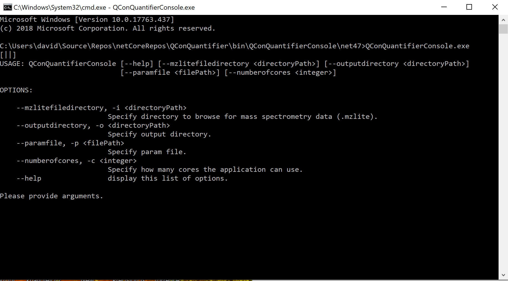

QConQuantifier
Setup
- The QConQuantifier library can be downloaded from github.
-
To build the tool please make sure that you have installed:
- 2.1 the latest .NET Core SDK AND .NET Framework Dev Pack.
- 2.2 the fake cli via "dotnet tool install fake-cli -g", build by calling "fake build" in the root of the project. For details regarding projects based uppon the project scaffold please visit ProjectScaffold or CsbScaffold.
- Once everything is set up you can download sample datasets and get started!
Example
After downloading the sample data set and building the project you can approach to analyze the data, by executing the QConQuantifier console tool.
Running the tool.
Navigate to ..\QConQuantifier\src\QConQuantifier\Scripts and open createParams.fsx with your favorite IDE. As you can see I already referenced paths fitting to the structure of the sample data. You will probably have to refine the paths a bit. Now we can use the help of intellisense to create a parameter type. In the end we will end up with a human readable Json file that we can exchange with colleagues and reuse if we want to start the console tool again.
1: 2: 3: 4: 5: 6: 7: 8: 9: 10: 11: 12: 13: 14: 15: 16: 17: 18: 19: 20: 21: 22: 23: 24: 25: 26: 27: 28: |
|
1:
|
|
After creating this parameter set and writing it to a file we have everything to start the console tool. To see which parameters the tool expects we can start it with the --help parameter.

As you can see there are 4 parameters to provide:
- -i MzLiteFileDirectory: The path of the directory containing the files to analyze
- -o OutputDirectory : The path of the directory containing the files to analyze
- -p ParamFile : The path of the param file we just created
- -c NumberOfCores : The number of cores you want to use. Each File will be analyzed on a different Core and the results will be combined.
If I now add the correct paths the programm will start and finish after aprox. 15 minutes.:

If you now navigate to your designated output folder you will find the data in a tab seperated format as "QuantifiedPeptides.txt" and a folder containing .html graphs showing the quantification results for each peptide grouped by the respective raw file.
Samples & documentation
- On the right side you will find further tutorials.
-
API Reference contains automatically generated documentation for all types, modules and functions in the library. This includes additional brief samples on using most of the functions.
from QConQuantifier
from QConQuantifier.Parameters
from QConQuantifier.Parameters
module Protease
from QConQuantifier.Parameters.DTO
--------------------
type Protease = | Trypsin
module IsotopicMod
from QConQuantifier.Parameters.DTO
--------------------
type IsotopicMod =
| N15
| C13
module MassMode
from QConQuantifier.Parameters.DTO
--------------------
type MassMode = SearchDB.MassMode
| PepValue of float
| SequestScore of float
module NTerminalSeries
from QConQuantifier.Parameters.DTO
--------------------
type NTerminalSeries =
| A
| B
| C
| AB
| AC
| BC
| ABC
module CTerminalSeries
from QConQuantifier.Parameters.DTO
--------------------
type CTerminalSeries =
| X
| Y
| Z
| XY
| XZ
| YZ
| XYZ
static member AppendAllLines : path:string * contents:IEnumerable<string> -> unit + 1 overload
static member AppendAllText : path:string * contents:string -> unit + 1 overload
static member AppendText : path:string -> StreamWriter
static member Copy : sourceFileName:string * destFileName:string -> unit + 1 overload
static member Create : path:string -> FileStream + 3 overloads
static member CreateText : path:string -> StreamWriter
static member Decrypt : path:string -> unit
static member Delete : path:string -> unit
static member Encrypt : path:string -> unit
static member Exists : path:string -> bool
...
File.WriteAllText(path: string, contents: string, encoding: Text.Encoding) : unit
static val True : string
static val False : string
static val Null : string
static val Undefined : string
static val PositiveInfinity : string
static val NegativeInfinity : string
static val NaN : string
static member DefaultSettings : Func<JsonSerializerSettings> with get, set
static member DeserializeAnonymousType<'T> : value:string * anonymousTypeObject:'T -> 'T + 1 overload
static member DeserializeObject : value:string -> obj + 7 overloads
...
Newtonsoft.Json.JsonConvert.SerializeObject(value: obj, settings: Newtonsoft.Json.JsonSerializerSettings) : string
Newtonsoft.Json.JsonConvert.SerializeObject(value: obj, [<ParamArray>] converters: Newtonsoft.Json.JsonConverter []) : string
Newtonsoft.Json.JsonConvert.SerializeObject(value: obj, formatting: Newtonsoft.Json.Formatting) : string
Newtonsoft.Json.JsonConvert.SerializeObject(value: obj, formatting: Newtonsoft.Json.Formatting, settings: Newtonsoft.Json.JsonSerializerSettings) : string
Newtonsoft.Json.JsonConvert.SerializeObject(value: obj, type: Type, settings: Newtonsoft.Json.JsonSerializerSettings) : string
Newtonsoft.Json.JsonConvert.SerializeObject(value: obj, formatting: Newtonsoft.Json.Formatting, [<ParamArray>] converters: Newtonsoft.Json.JsonConverter []) : string
Newtonsoft.Json.JsonConvert.SerializeObject(value: obj, type: Type, formatting: Newtonsoft.Json.Formatting, settings: Newtonsoft.Json.JsonSerializerSettings) : string